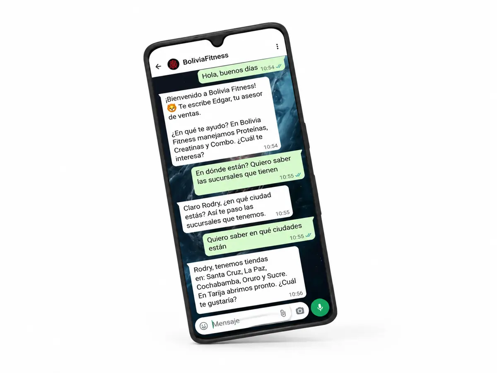

Institucional2026
CAMEBOL Santa Cruz
La filial cruceña de la Cámara de Mujeres Empresarias de Bolivia — la misma que invitó a Johnny como speaker del Foro FEM.
camebolscz.com ↗Inicio›Proyectos
Prueba real · en línea hoyEstos sistemas están corriendo ahora mismo, con clientes usándolos todos los días. Podemos mostrarte cualquiera en vivo durante la reunión.
Cada uno está en línea. No hay mockups ni pantallas de ejemplo: entrá y miralos.


No son demos. Cada uno atiende, califica y deja el registro donde el equipo del cliente lo revisa e interviene cuando hace falta.
Muestra el catálogo, responde las dudas de siempre y registra el pedido con recojo o envío. Todo queda en base de datos y el equipo interviene desde un panel.
Inscripciones para una academia de danza infantil: da la bienvenida, muestra las sucursales con ubicación en Maps y los horarios de cada disciplina, y deja todo anotado para seguir las clases de prueba.
Agente de venta para una firma inmobiliaria: conversa, califica y asigna al asesor que sigue la cita. El equipo lo opera desde GoHighLevel con cada interacción registrada.
Chatbot de registro para la promoción del Día de la Madre: inscribe al participante, valida los datos y deja todo auditable para el equipo de la marca.
El agente de la propia casa: atiende la consulta inicial, califica el lead, muestra los servicios y conecta con el equipo según la necesidad concreta.
Vende y asesora en aires acondicionados: cierra la venta, avisa al encargado cuando entra un depósito y envía la ubicación para cotizar.
Un agente de atención y venta que muestra el catálogo completo, responde las dudas de siempre, registra el pedido y lo sincroniza con el sistema del cliente. Funciona de noche, los domingos y en feriados.
Faltan los tres números del cliente

Cada una con su manual: logotipo, paleta, tipografías y usos.


Piezas para redes, rodadas y editadas por el equipo. Tocá para reproducir con sonido.


Una selección de piezas, para marcas de rubros muy distintos. Hay muchas más.


Son sistemas que corren dentro de empresas que prefieren no figurar. Los podemos mostrar funcionando en la reunión, sin decir de quién son.
Quiero verlos en vivo → Confirmar cuáles son de verdad confidenciales
Marcas que ya nos dejaron entrar a sus operaciones
Tomémonos 30 minutos y te mostramos, en vivo, cómo se vería tu empresa con sus propios sistemas.
Conversemos →Los 6 sistemas en línea salen textuales del PDF de capacidades.
Nuevo · las cuatro categorías, no solo websprojects.ts y de los assets del sitio en producción.projects.ts — los agregaste vos acá. Hay que sumarlos también al sitio en producción o los dos portafolios quedan desincronizados.